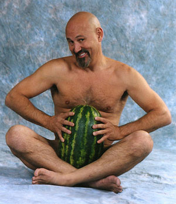
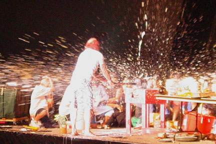
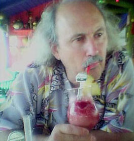
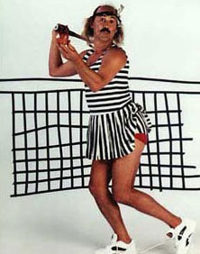
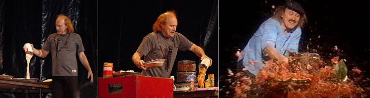
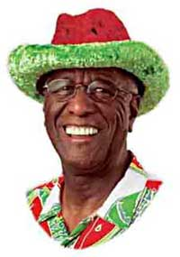
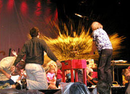
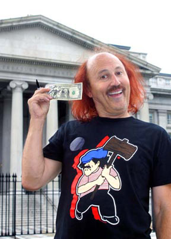

"I'm
tired of being dismissed as merely a guy who smashes fruit."
California might be one big party town, but in August of 2003, Governor
Gray Davis was considered the club's worst dj. When the recall circus
began, anyone capable of coughing up the $3500 filing fee and 65 signatures
could get their names affixed to the ballot.
Never mind that sixty-five was roughly the same number collected
by fans of NBC's 1983 series Manimal to get the program back on
the air - but for veteran prop comic Gallagher, securing signatures
in Los Angeles was like pulling teeth. He "stood on Sunset Boulevard
like a prostitute," soliciting a city full of multinationals who
didn't recognize him. And the rest just didn't seem that interested in
getting registered to vote. When he showed up in the lobby of The Washington
Post with a large cardboard box filled with dirty clothes, a security
guard asked him to leave.
Known for his balding head with Krusty the Klown tufts, horizontally
striped shirts and foppish berets, this precursor to Carrot Top sledgehammered
his way to fame and fortune in the early 1980s. During his comedy routine,
he was indeed the first to postulate openly, if 7-11 convenience stores
are open 24 hours, why do they have locks on the doors? Less than
a decade later, comic Steven Wright would answer his query: "sure
they're open 24 hours - but not in a row." Gallagher's comedy involves
wordplay, insightful satire, and the spectacular, splattery destruction
of maleable foodstuffs across entire auditoriums. Like Doug Henning combined
with Weird Al Yankovic and sprinkled with Cheech and Chong, Gallagher
inspired a generation. During a segment of the Wachowski Brother's The Matrix - as Neo is running through an outdoor market - the directors
insisted watermelons get a little smashed up as an homage to the comic.
Today,
the fifty-seven year old Gallagher's presence cements California as the
political loony bin of the entire nation. He'll appear on the upcoming
recall ballot as "Leo" Gallagher (his name and astrological
sign). He promises to reduce bumper-to-bumper freeway traffic by sending
military-style helicopters to airlift wrecked cars. "How is our economy
going to move if you can't move on the freeways?"
Other platforms include the restriction of cellular telephone usage:
"it's annoying and the idiots are getting worse. Make it illegal
to talk loudly on cell phones in public." He also likes the ideas
of newspapers running obituaries for businesses - and suggests that if
the state of California operates at a loss, then its citizens should write
off their share of the loss on their federal income tax returns. Nnnnot
bad, actually.
Not
one to "skirt" issues [left], his campaign slogans run the gamut
from "Finally, a governor you can get drunk with," [right] and
"Together we can screw the state," to "A grass roots movement
you can't stop from rolling."
Gallagher postponed his September 6th concert at the Topeka, Kansas Performing
Arts center to focus on his campaign. He's now entitled under equal access
law to television appearances with Jay Leno, Diane Sawyer, and Matt Lauer.
When he attempted to make a surprise announcement on CNN's CrossFire,
he was pre-empted by a massive, northeastern electrical blackout which
struck down power in Ottawa and portions of the United States. Then he
announced on WGN Television in Chicago that he's not only running for
Governor of California, he's entering the 2004 Presidential Race
as well. Following performances in Chicago and Davenport, Gallagher plans
to campaign at the Iowa State Fair.

But
on August 15th, 2003, journalists at Rotten Dot Com uncovered a scandal
- and evidence which reasonably sensitive black voters might not take
a liking to. On Gallagher's web site, there exists a tell-tale link to
a small business called Wally Amos Watermelon Hats, trademarked,
owned by, and used under license by Soma, a limited liability corporation.
Wally Amos, the black proprietor, claims that watermelons are a metaphor
for life, and each "Wallymellon" hat contains inspirational
seeds of religious wisdom in a hidden compartment. The textured velvet
fedora (or top hat), has a cool cotton lining and is fully adjustable
to any size. Amos himself was a theatrical agent at the William Morris
agency, where he worked with Simon and Garfunkel and The Supremes. Over
the years, Amos has acted in network sitcoms and news programs.
Supporters
might argue that Gallagher's fondness for politically incorrect haberdashery
isn't really directed at black people, he's just "taking back
the night" by poking fun at watermelons themselves. Supporters insist
he's just smashing stereotypes. But by ridiculing melons (or any seeded
fruit currently protected under California's multicultural umbrella),
by publicly executing literally truckloads of vegetables likely
handpicked by impoverished Mexican immigrants - what kind of message could
Gallagher possibly be sending to the Latino community? Do Hispanic Americans
in the front row really want this comic's threadbare political agenda
splashed across their faces?
Gallagher responds: because the state is 50% Latino, as governor he would
mandate the singing of a Spanish version of the Star Spangled Banner
at 50% of all statewide sporting events. He'd also build an enormous dam
across the Gulf of California to create a fertile valley in Mexico. When
the seawater is sufficiently drained, crops will be grown and harvested
by Mexican families who wouldn't have to immigrate to the states.
Other
proposed initiatives include:
- Expanding the indecent exposure statute to place restrictions on teenage
boys' ability to sport low-hanging pants (so the "pooper part"
is less visible). However, Governor Gallagher would make it legal for
kids to "cruise" and show off their lowriders, abolishing anti-cruising
laws and establishing lawful zones where kids could cruise safely.
- Allowing motorcycles to use the diamond lane (but not go between cars)
because frankly that scares him.
- To save taxpayer money, all remaining Charles Manson parole board
hearings would be cancelled.
And there are key science and technology issues in his agenda as well:
Because the U.S. won World War II and world leadership by way of sub-atomic
particles in atomic weaponry, Gallagher proposes that sub-atomic particles
be characters in video games, card games and cartoons, "so a future
electorate will be more informed than the one who cancelled the supercollider."
Presently, much of California's fertile Central Valley frowns upon his
reckless, feckless wastage of precious foodstuffs - alleging he's only
using the state to revive his B-list career. Flagrant destruction of the
state's number-one cash crops place him in a tense position with members
of California's Green Party. And watermelons aren't the only products
which fall victim to his trademarked Sledge-O-Matic: Gallagher concerts
also consume and destroy cantaloupes, pineapples, bowls of oatmeal - even
oversize bottles of pink dishwashing detergent.
"You gotta get a comic to clean this place out," he says -
a statement equally true of Gallagher concert halls and California politics.
Voters will tentatively emerge from behind their clear, plastic ponchos
for statewide special election on Tuesday, October 7th, 2003. Polls will
be open from 7:00am to 8:00pm.
|